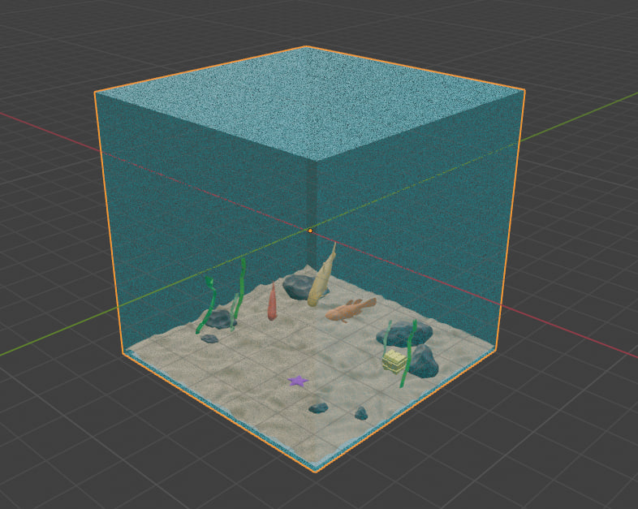

Il progetto è stato sviluppato per la materia 'Fondamenti di Computer Graphics', corso di studio 2023/2024, con l'obiettivo di sviluppare una applicazione 3D interattiva utilizzando WebGL (HTML5, CSS e contesto webgl) e linguaggio JavaScript.
La scena rappresenta un paesaggio sottomarino di forma cubica, si può pensare di aver estratto dal fondale un piccolo cubo acquatico, contenente alcune forme di vita che si muovono mosse dalle correnti marine.
I modelli presenti nella scena sono stati implementati su Blender e poi importati in formato .obj con relativo file .mtl che ne descrivono le caratteristiche.
Il progetto è stato sviluppato utilizzando Javascript, integrato con WebGL.
La cartella doc contiene la documentazione del progetto, mentre la cartella myproject contiene il progetto stesso, all'interno della suddetta cartella troviamo:
Caricando il file html in un qualsiasi Browser che supporta WebGL si potrà visualizzare il progetto, che si mostra come segue:
Possiamo notare che l'interfaccia è divisa in 2 campi:
In particolare il libretto istruzioni serve a spiegare all'utente i movimenti che esso può eseguire. Il pad permette all'utente di muoversi nella scena e la GUI contiene degli sliders e un tasto di abilitazione e disabilitazione della stessa, che permette di modificare le luci nella scena e la trasparenza dell'acqua (rappresentata dal cubo trasparente).
La scena è gestita tramite diversi script Javascript, andiamo ad analizzarli: